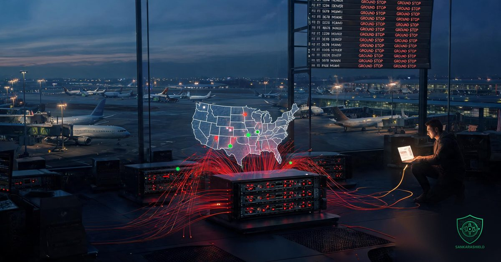

One router grounded every flight in the US: what the FAA ground stop teaches network teams.

On Friday, November 13, 2026, the Federal Aviation Administration ordered a nationwide ground stop. For more than four hours, no flight could take off anywhere in the United States. It was only the second nationwide ground stop since September 11, 2001, after the NOTAM system failure of January 2023.
There was no cyberattack. The White House said it saw no indication of a "nefarious act." The disruption began during telecommunications work at an FAA facility in El Dorado, Arkansas, and spread instability to radar and communications feeds at 17 of the country's 22 en route air traffic control centers.
At the center of the investigation is a single, newly installed network router.
This brief covers what is confirmed, what is still unknown, and the network design lessons every team running critical infrastructure can take from it. All facts below come from public reporting by CNN, CBS News, CNBC, NPR, Axios and Aviation Week, as of November 19, 2026.
WHAT HAPPENED
THE TRIGGER — according to CNN, the disruption occurred during telecommunications work at the FAA facility in El Dorado, Arkansas. The work involved a newly installed router made by Juniper Networks, a company owned by Hewlett Packard Enterprise.
THE FLOOD — Transportation Secretary Sean Duffy said the router began flooding the FAA network with traffic, generating more than 1,000 connection attempts every four to five seconds. CBS News sources described routers that "essentially got overwhelmed" and started feeding out-of-sync data packets into the larger air traffic control system.
THE IMPACT — radar and communications feeds became unstable at 17 of the 22 en route centers, the facilities that manage aircraft at cruising altitude between airports. With that level of uncertainty, the FAA stopped all departures nationwide. The ground stop was lifted after more than four hours, but cancellations and delays continued into the weekend.
THE RESPONSE — the FAA paused the installation of new routers of that model and disabled more than 60 units that had already been deployed, as a precaution.
WHAT IS STILL UNKNOWN
THE ROOT CAUSE — as of November 17, FAA Administrator Bryan Bedford said investigators were "very close" to determining the root cause, but neither he nor Secretary Duffy could yet say what triggered the fault. No official root cause had been announced at the time of writing.
HARDWARE, INSTALLATION OR CONFIGURATION — investigators are trying to determine whether the failure came from defective equipment, an installation mistake or a configuration error. Duffy framed the question as whether it was "user error or installer error from L3Harris," the FAA contractor, or a faulty router.
THE VENDOR'S POSITION — an HPE spokesperson said the equipment was working as configured. The FAA said it is "assessing the configuration and performance of all infrastructure involved to determine the cause."
LEGACY AND NEW EQUIPMENT — according to Axios, Homeland Security Secretary Markwayne Mullin pointed to incompatibilities between older equipment and the newer equipment being installed. This is consistent with a network in the middle of a large modernization program.
THE SCALE AHEAD — a group of senators said L3Harris plans to install 3,648 Juniper routers for the FAA, with about 400 installed so far and only 69 in operation. Whatever the root cause turns out to be, it will shape thousands of future installations.
FIVE LESSONS FOR NETWORK TEAMS
Until the official findings are published, nobody outside the investigation can say exactly what failed. But the pattern is familiar to anyone who has run a large network, and the lessons do not depend on the final verdict.
BLAST RADIUS IS A DESIGN CHOICE — one device at one site affected 17 of 22 centers. In a well-segmented network, a local failure stays local. Failure domains, routing boundaries and redundant paths exist so that a single misbehaving node cannot destabilize the whole system. Ask the question for your own environment: if one router at one branch went wrong, how far could the damage travel?
PROTECT THE CONTROL PLANE — a device generating more than 1,000 connection attempts every few seconds is exactly what control plane policing, rate limiting, connection limits and protocol timers are built to contain. Healthy neighbors should be able to shed abnormal traffic from a single peer instead of drowning in it. Many networks configure these protections on the internet edge and forget the internal core.
CHANGE MANAGEMENT IS A SECURITY CONTROL — most large outages begin with a change: an upgrade, a new device, a routine configuration push. Lab validation with a production-like configuration, staged rollout to a single site first, a defined maintenance window, real-time monitoring during the change and a tested rollback plan are what turn a bad change into a short incident instead of a national one.
MODERNIZATION IS A RISK WINDOW — the most dangerous period for any network is the migration itself, when old and new equipment run side by side. Different defaults, protocol behaviors and timers can interact in ways nobody tested. A migration plan needs interoperability testing between legacy and new devices, not just an installation schedule.
VISIBILITY SHORTENS THE OUTAGE — telemetry, flow data and traffic baselines tell an operations team within minutes which device suddenly started talking too much. Without them, engineers are guessing while the whole system waits. The faster you can isolate the source, the shorter the outage.
AVAILABILITY IS SECURITY
Security conversations often focus on attackers. This incident is a reminder that the "A" in the CIA triad, availability, carries the same weight as confidentiality and integrity. For the passengers, airlines and controllers affected on November 13, a nationwide outage with no attacker involved looked exactly like the impact of a successful attack.
The same month, CNN reported an outage of the NSA's internal classified network, also with no evidence of a cyberattack so far according to its sources. Two critical government networks disrupted in the same period, neither by an adversary, is a strong signal: resilience engineering deserves the same attention as threat detection.
WHAT TO DO NOW
MAP YOUR FAILURE DOMAINS — identify which single devices, sites or links could affect more than their own segment, and document the worst-case blast radius for each.
AUDIT INTERNAL CONTROL PLANE PROTECTION — check that control plane policing, rate limits and session limits are configured on core and distribution devices, not just at the internet edge.
TIGHTEN THE CHANGE PROCESS — require lab validation, a pilot site, live monitoring and a tested rollback plan for every new device type before wide deployment.
TEST LEGACY AND NEW TOGETHER — during any migration, run interoperability tests between old and new equipment under realistic load before production cutover.
BASELINE NORMAL TRAFFIC — collect flow and telemetry data so that a device behaving abnormally stands out in minutes, not hours.
LIMITS OF THIS BRIEF
This brief relies on press reporting and official statements as of November 19, 2026. The FAA had not published a root cause analysis at the time of writing, and HPE disputes that its equipment failed. Some figures, such as the number of routers disabled, vary slightly between sources. The lessons above are general network engineering practices and do not assume any specific cause. Readers should check the FAA's final findings when they are released.
THE BOTTOM LINE
A single router, during routine telecommunications work, coincided with a nationwide halt of air traffic. Whether the final cause turns out to be hardware, installation or configuration, the design questions are the same: how far can one device's failure travel, how fast can you see it, and how quickly can you roll it back?
In your environment, could a single misbehaving device take down more than its own site?
Sources: CNN, FAA pauses Juniper router installations after nationwide ground stop: https://www.cnn.com/2026/11/17/us/faa-ground-stop-juniper-router-installations CNN, What we know about the cause of the nationwide FAA ground stop: https://www.cnn.com/2026/11/14/politics/faa-ground-stop-what-we-know CBS News, FAA lifts nationwide ground stop: https://www.cbsnews.com/news/faa-issues-nationwide-ground-stop/ CNBC, Root cause of nationwide ground stop is unknown, FAA says: https://www.cnbc.com/2026/11/14/root-cause-of-nationwide-ground-stop-is-unknown-faa-says.html NPR, FAA lifts the nationwide ground stop for all U.S. airports: https://www.npr.org/2026/11/13/nx-s1-6040403/faa-nationwide-groundstop-airports Axios, FAA ends hours-long nationwide ground stop: https://www.axios.com/2026/11/13/faa-nationwide-ground-stop Aviation Week, FAA says router malfunction led to ground stop: https://aviationweek.com/air-transport/safety-ops-regulation/faa-says-router-malfunction-led-ground-stop Al Jazeera, FAA pauses router upgrades linked to nationwide ground stop: https://www.aljazeera.com/news/2026/11/17/us-senators-demand-faa-pause-upgrades-linked-to-nationwide-ground-stop